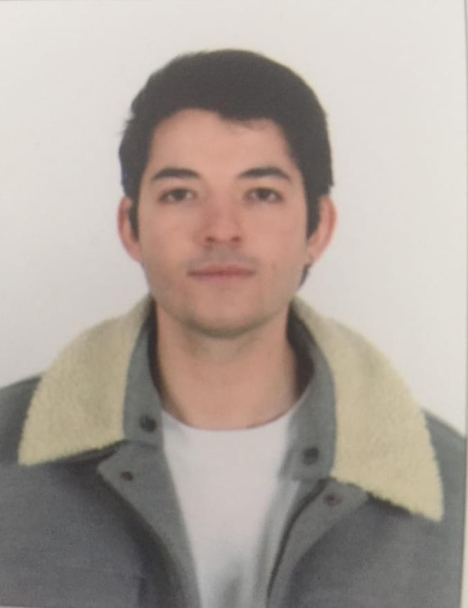

Fatih Sefa ,TÜRÜDÜ
Persönliche Information
Geburtsdatum:24.03.2003
Geboren in : Ankara
Staatsangehörigkeit: türkisch
Geboren in : Ankara
Staatsangehörigkeit: türkisch
Adresse:
Aşağı Eğlence ,Susurluk Straße, Keçiören, Ankara 06010, Maliye Lojmanları 4/B Etage 10 , Hausnummer 40 06010 Ankara, TürkeiPC Kenntnisse
- CSS (Anfänger)
- HTML (Anfänger)
- JavaScript (Anfänger)
- MS Word
Hobbys
09.09.2019 – 02.07.2021 – Ankara, Türkei
Abschluss: Abitur
Privates Ortadogulular Anatolisches Gymnasium
18.09.2017 – 07.06.2019 – Ankara, Türkei
Sekundarabschluss II
Kirami Refia Anatolisches Gymnasium
19.09.2016 – 07.06.2017 – Ankara, Türkei
Sekundarabschluss I
Bilisim Koleji
09.2013 – 06.2016 – Ankara, Türkei
Sekundarabschluss I
27 Aralık Lions Ortaokulu
09.2008 – 06.2012 – Sakarya, Türkei
Grundschule
Ozanlar Sehit Mustafa Özen Ilkokulu
2004 – 2006 – Hamburg, Deutschland
Kita
Rudolf-Ballin-Stiftung eV - Kita '"Kinderland Haus am Fleet"
SPRACHKENNTNISSE
MUTTERSPRACHE(N): TürkischWEITERE SPRACHE(N): Deutsch(b1) Englisch(b2)